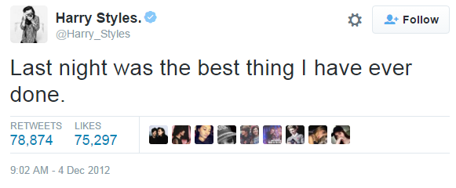
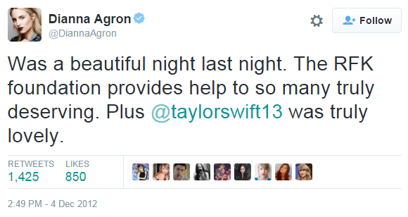
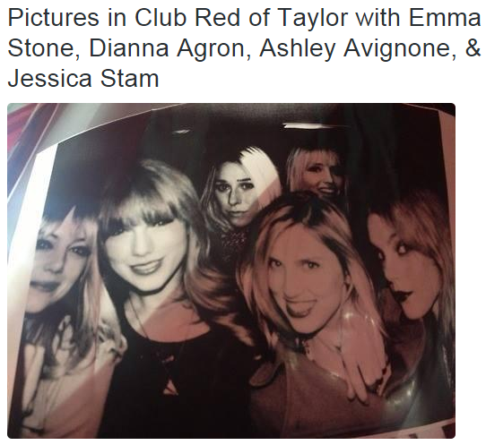
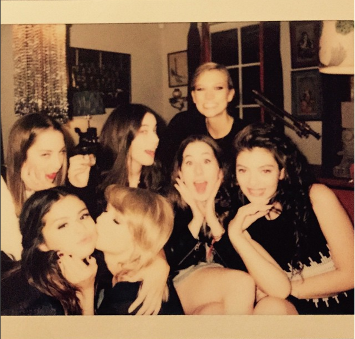
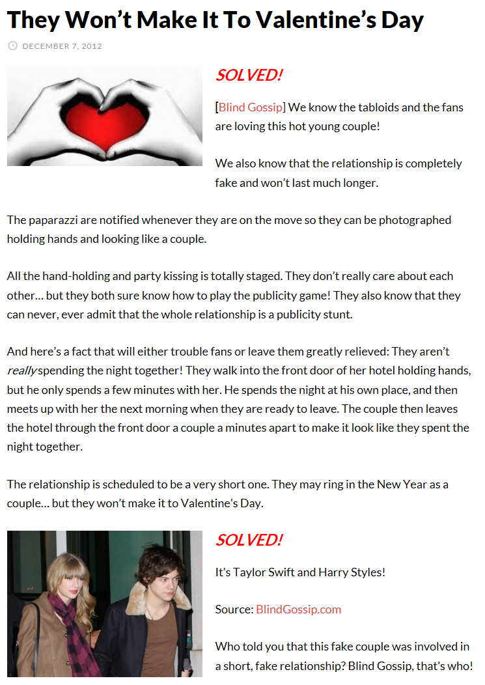

7. One Day She Came Back
从12年12月2号到13年1月3号，Haylor实质上只有1个月，和8月的Kennedy一样。但和Kennedy不同，从Haylor的一开始，就有直接指出他们是PR的不和谐声音传出来。
12月2号，TS和HS一起去纽约中央公园动物园，图集。
12月3号，英国另一个男孩组合Union J的成员George Shelley在X factor接受采访时被问到HS（因为他也是卷毛，所以常被拿来和HS作比较），这个视频一定要看，笑死人了。
主持人问："Are you gonna have a beard like Taylor Swift as well?"
beard有2个意思：
一个是胡子
一个是指为了隐藏自己同性取向，找一个异性来扮作情侣掩人耳目，比如一个gay boy找了一个girl来当他“女朋友”，那这个girl就是他的beard，反之亦然。
主持人在这里问的就是第2个意思：你会不会也学HS找一个像TS那样的beard？
前排的卷毛George和黑衣Jaymi笑了，后排两人不解
Jaymi是gay他知道什么意思，George笑归笑还是没搞明白，就问了一句
"Taylar Swift has a beard?" TS有胡子吗？
Jaymi就悄悄告诉了他，然后George意味深长的“哦~~”了一声，陷入沉思（几年后他也出柜了，承认自己是双）
屏幕一黑他们内部宣讲了一番，接着主持人又重新问了一遍
"Are you gonna have a beard like Taylor Swift as well?"
四个人全部：啊哈哈哈哈，a beard……
12月3号，TS和DA一起参加RFK，图1，图2，图3，Kennedy给TS颁了个奖，TS还唱了Starlight、Mean和Love Story，去了现场的人拍了视频（有TS的演唱和DA的讲话）。活动结束后，DA先回酒店（TS和DA 都住在Greenwick酒店）
{kind=link}
{kind=link}
{kind=link}
当晚1D有演出，TS参加完RFK后去了1D的after party，和HS、Ed还有别的1D成员卡拉OK到凌晨。4号凌晨4点，TS和HS被拍到一起回Greenwick酒店，1D其他人住在别的酒店。
纽约的狗仔也是要下班的，就算是现在，TS的家门口也不是时时刻刻都有狗仔，没接到消息他们不会长期蹲守。凌晨4点，如果不是收到通知，谁会在那等着他们？
而且据说，HS被拍到凌晨4点多回自己酒店，如果属实，这意味着HS根本就没待在Greenwick，他和TS一起进酒店被拍好照片之后转头出门回了自己酒店，第二天一早再去Greenwick，从正门走出让狗仔拍到，这样谁都觉得他当晚是和TS在一起了。
{kind=link}
这个消息一出就有人不解，既然是PR的，做样子怎么不做真一点，反正在酒店，就在隔壁多开间房一个人住一晚上又没什么大不了的，为什么非要半夜回去早上再来，这不是容易露陷吗？
但是你想想，TS和DA一起住在Greenwick，HS的另一位绯闻对象在另一个酒店，HS留在Greenwick干嘛，当然要回自己酒店了。
也许正因HS如此任性，TS才在之后抱怨他是"Fucking idiot"，"A bad actor"，"He didn't even fucking try"，当然这是后话了。
4号一早，HS还发了一则让人浮想联翩的推，这句话暗示的意思都懂的。
DA不乐意了： TS昨晚明明和我在一起！
这两人和last night杠上了……
12月4号，DA陪TS拍摄ELLE（13年3月刊），在ELLE的拍摄地，有个实习生分别与她们合影，图1，图2，图3，13年2月ELLE官网也发文说DA陪着TS拍摄。
{kind=link}
{kind=link}
{kind=link}
{kind=link}
12月5号，TS回Nashville参加Grammy提名晚会。
12月6号，TS、DA、Ashley、DA的几个朋友、HS一起参加Emma Stone的生日party，图1，图2，图3，party结束之后姑娘们一起去看了Sleep No More，图4，图5，她们还一起拍了合影，合影被挂在TS的Club RED中展出。
{kind=link}
{kind=link}
{kind=link}
{kind=link}
{kind=link}
{kind=link}
从左到右依次是：Emma Stone、TS、Ashley、Kelly Straw、Jessica Stam，DA站在后排角落里。（Kelly Straw和Jessica Stam都是DA的好朋友）
这个构图让我想起了另一张合影，2014年11月，KK也站在最远的位置
12月初这几天HS天天都被拍到进出TS住的酒店，有时候还一天进出多次，剧情真恶俗。
12月7号，Blind Gossip出了一则爆料，在Haylor分手之后解谜
{kind=link}
（Blind Gossip的原则是，爆料中涉及的人物匿名，正文中会给出一些提示/暗示，大家在评论中猜这则爆料是讲谁，如果日后这则爆料被证明是真的，就会将状态改为SOLVED已解决，并公布人物姓名）
简单翻译一下：
【他们撑不到情人节】SOLVED!
我们知道八卦小报和粉丝们爱死这对小情侣了！
我们也知道这段关系是假的而且长不了。
狗仔被告知了他们什么时候要去哪，所以他们总能像一对情侣一样被拍到手牵手。
所有的牵手和kiss全都是演戏。他们根本不在乎对方，但他们都懂该怎么在公共场合表演。他们也知道自己永远不能承认这段关系是PR的。
他们从来没有真的在一起过夜！他们手牵手的走进她酒店前门，只在那待了几分钟，他就回自己的酒店了，第二天一早约好时间他再去她酒店，然后一起从酒店前门走出来给狗仔拍，离开酒店后就分开各忙各的，看起来像是他们一起过夜了一样。
计划中这段关系就是很短暂的，他们可能在新年要出来秀恩爱，但肯定撑不到情人节。
（后面的不翻了，可以自己看看底下还有较长的分析）
12月8号，HS乘TS的私人飞机去英国
12月12号，一起在湖区玩
12月13号，在HS老家柴郡过生日，被狗仔拍到一系列高清图
TS在纳什维尔（11年底之后）被狗仔拍到过吗？没有！她所有的街拍不是纽约就是洛杉矶，她只要回纳什维尔就相当于失踪，最多能有路人爆料，这还跟中了奖似的。TS和KK在纳什维尔只被路人拍到过一次，KK一脸惊悚的看着镜头，TS面无表情继续往前走，画面还糊得一脸。如果TS哪天和谁一起走过纳什维尔多个地方，被清楚的拍到，还是面带微笑的，那基本就是你懂的。（还有个据说从公关公司传出的说法，如果一对“情侣”第一次单独出现在公众视野时是在买吃的，那这100%是PR）
{kind=link}
纳什维尔好歹还是田纳西州的首府，HS老家比纳什维尔还乡下，竟然有狗仔，还沿途拍了那么多高清恩爱的图，啧啧
{kind=link}
12月14号，曼彻斯特
接下来几天不在一起
12月18号，TS陪HS在LA纹身店纹了一个船型纹身，和IKYWT男主手上纹身一样，IKYWT被认为一定是写HS的（个屁）
关于纹身本文不展开，有兴趣的请移步>>这篇文章<<，作者是1D粉，她更多站在HS的角度分析Haylor是PR，关于HS的纹身，IKYWT和HS有没有关系、1D有“冬日女友”的传统等方面这位作者写得很详细
12月19号，HS被狗仔拍到出现在TS的LA家门口，和Mama Swift一起。如果我没记错，狗仔唯一两次在TS的LA家门口拍到人，一次是12年的Harry Styles，下一次是15年的Calvin Harris，除此之外，狗仔根本就没拍过她LA家门口的照片，就连TS自己在LA家门口都是绝无街拍的，而唯一的两次恰好是绯闻男友，这是件很寻常的事？
12月20-23号，Utah滑雪
12月24号，HS到达伦敦，用衣领挡着下巴，后来知道是受伤了
圣诞节各过各的（圣诞节当天不PR的传统一直延续着）
12月31号，HS到达纽约，先看Coolplay演出，然后到时代广场和TS跨年kiss。保镖大叔们愣是在倒计时前在人群中给他们挤出了一块区域把他们带过来，方便周围的人民群众360度的拿手机对着他们拍拍拍，附上一张TS和HS一起愉快跨年的图，HS能不要露出一副马上就要慷慨就义的表情吗~
{kind=link}
13年1月1-3号，一起去维京群岛度假，3号据说是闹翻了，TS一个人先坐飞机回家。因为有一张TS一个人坐在船上的照片，所以故事情节就变成了“HS把TS一个人丢在船上，自己寻欢作乐”，还有“HS说，知道我为什么不跟你一起玩吗，因为你太无趣了！然后把TS气哭了”之类的，天知道这些剧情是从哪来的。
1月5号，已经回家的TS发了一条推：…'til you put me down.
这是IKYWT中的一句歌词，乖乖，这下HS更加和IKYWT脱不了干系了。
至此，TS和HS的PR工作“顺利”完成，“圆满”结束！(才怪)
1月9号，TS穿着白色深V礼服出席人民选择奖，从她左侧拍摄的某些角度照片清楚的看到她胸前有一个红色不明痕迹，十分像咬痕~
{kind=link}
{kind=link}
在百度里搜“咬痕”，照片对比看看是不是很像。
TS和DA在一起的这段时间，DA PR2次，TS也PR2次，DA每次都只有牵手，但TS每次都有kiss，和HS在一起的剧情更恶俗一些。HS当初看着Louis和“女友”手牵手离开生气的扔球坐地上，Louis在知道HS要和TS PR时还生病了一阵子。正常的情侣都受不了对方和其他人做出亲密举动，哪怕只是做戏。
从12年7月到13年1月这半年时间，TS和DA因为工作原因大半时间都相隔两地不在一起，前3个月DA在国外拍电影，10月底DA回来了，11月TS又至少半个月在国外，12月几乎全在和HS PR，这半年里她们能在一起的时间加起来1个月都不到。TS在这半年里连续2段PR，次次都kiss，现在PR终于结束了，DA就在她胸前咬一口留个惩罚/想念的印记。
（这是我猜的，也有可能不是咬的，是TS自己拿汽水瓶、啤酒瓶或者拔火罐的瓶子往胸前戳的）
1月10号，TS写All You Had to Do Was Stay
——THEY PAID THE PRICE
1月15号，TS写 How You Get the Girl
——IT'S BEEN A LONG SIX MONTHS，THEN ONE DAY HE CAME BACK